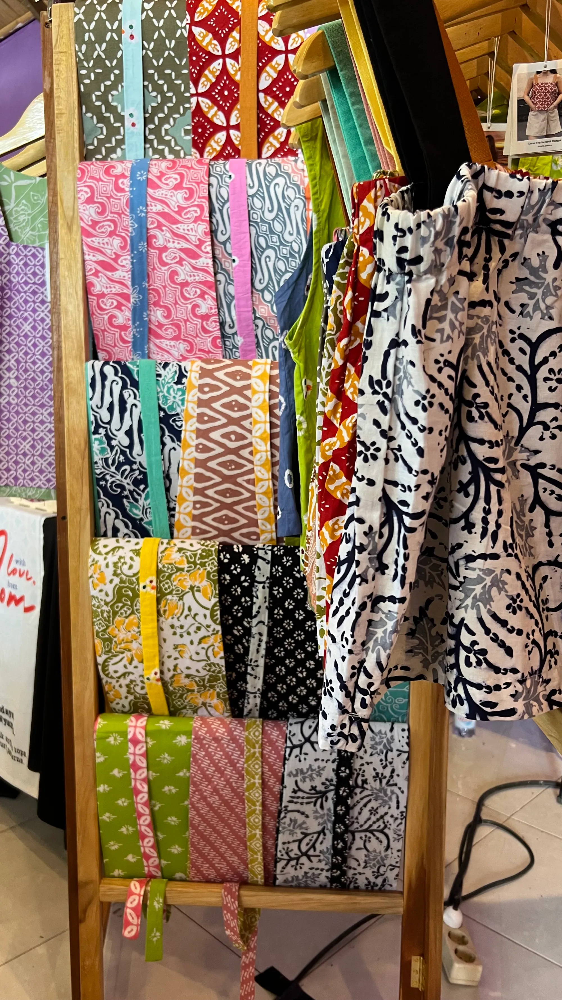

Ubud Artisan Market: Easter Weekend
A celebration of local culture and mindful craftsmanship set in the heart of Ubud. Being part of the market opened With Love, From Mom to visitors from around the world, many discovering Indonesian batik through our pieces, falling in love with them, and bringing home more than just two.